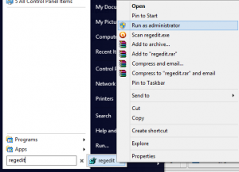
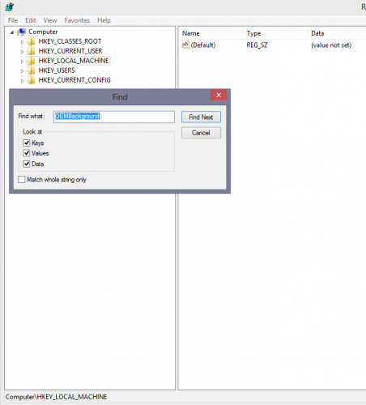
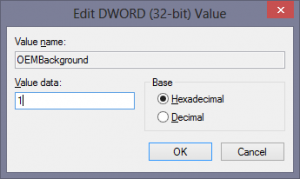
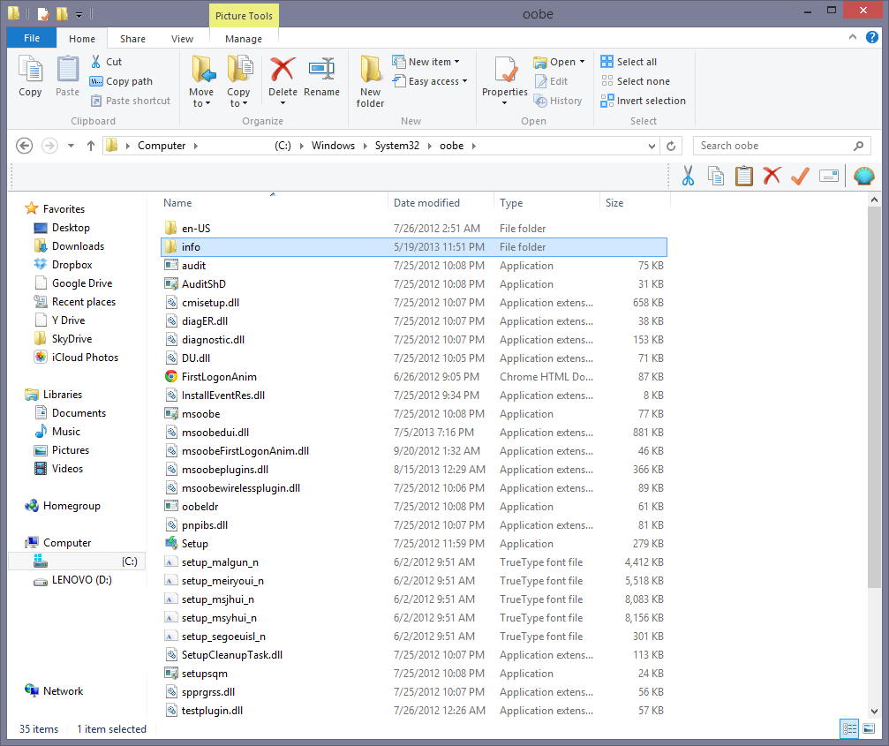
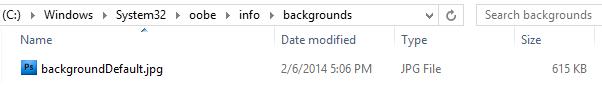

Poate pȃnă acum puțină lume a incercat acest lucru. Dacă totuși e cineva interesat și nu știe cum să facă acest lucru, atunci veți vedea in cele ce urmează.
!!!Imaginea de log-on este acea imagine care apare la deschiderea/inchiderea calculatorului.

Mai intȃi deschideti meniul "Start",
iar in locul special de căutare,
scrieți "regedit";
Apoi intrați in aplicație,
iar apoi in dosarul numit
"HKEY_LOCAL_MACHINE";
Dați click dreapta pe dosar
și apăsați "Find...";

In spațiul special căutați/tastați "OEMBackground"
și apoi dați pe "Find Next";
In partea dreaptă veți avea
două fișiere.
Pe cel numit "OEMBackground"
dați click dreapta;

Vă va apărea o altă fereastră
și ceea ce trebuie să faceți aici
e să schimbați din valoarea "0" in valoarea "1"
(evident in spațiul de completat);

Deschideți "Windows Explorer",
intrați in partiția "Disk Local (C:)"
->"Windows"->"System32"->"oobe;

In acest dosar ("oobe") creați alțul
numit "info" și in el creați un altul
numit "backgrounds".
De abia aici puteți să puneți
imaginea dorită(*)**;
Cam asta e tot. Sper că v-am fost de ajutor. In partea laterală, aveti imagini cu schimbarea imaginii pe pași (primul sus, următorul la următorul paragraf etc.)
**Imaginea pusă in dosarul "oobe" trebuie să aiba extensia ".bmp" sau ".jpg." Mărimea acesteia trebuie să fie mai mică decȃt 245kb;
*Dacă nu știți cum să schimbați extensia, veți afla acest lucru in articolul Cum schimbi extensia unui fișier?